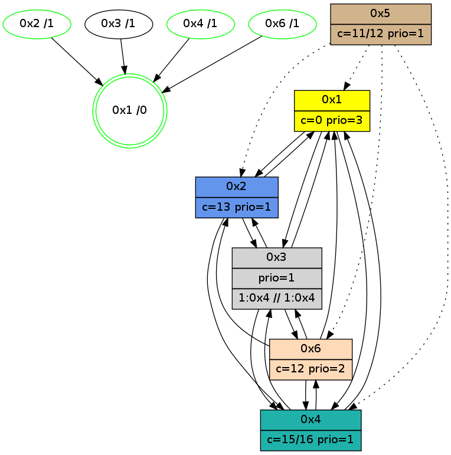

>> << IDX [start] -100 -25 -5 +0 +5 +25 +100 [1080.32712317]
 Previous packets
----------------------------------------------------------------------
1075.406042 beacon01(adaf) #0 coord=01,02,05,03,04,06 cycle=432.0ms assoc
-- color-indic=1 64 64 78
1075.416003 beacon02(adaf) #0 coord=01,02,05,03,04,06 cycle=432.0ms assoc 64 35 87
1075.426003 beacon05(adaf) #0 coord=01,02,05,03,04,06 cycle=432.0ms assoc 64 93 ad
1075.436005 beacon03(adaf) #0 coord=01,02,05,03,04,06 cycle=432.0ms assoc 64 0f 89
1075.446005 beacon04(adaf) #0 coord=01,02,05,03,04,06 cycle=432.0ms assoc 64 a9 a3
1075.456005 beacon06(adaf) #0 coord=01,02,05,03,04,06 cycle=432.0ms assoc 64 dd bf
1075.467747 [Hello(2): seq=1369 sym=3,6,1,4 sysInfo=hasWarning stat=3:10,1,6,1/6:4,12,12,4/1:9,6,4,0/4:2,4,1,0]
1075.472240 [Hello(4): seq=882 sym=1,6,3 asym=2 sysInfo=hasWarning stat=1:15,15,3,0/6:3,10,8,6/3:6,15,13,3/2:3,7,1,0]
1075.476092 [Color(4) seq=163 @0:0 color=15/16 prio=1 c=0,7,c;1,4,6,8,9,b,d,e]
----------------------------------------------------------------------
1075.898150 beacon01(adaf) #0 coord=01,02,05,03,04,06 cycle=432.0ms assoc
-- color-indic=1 64 28 c8
1075.908111 beacon02(adaf) #0 coord=01,02,05,03,04,06 cycle=432.0ms assoc 64 79 37
1075.918112 beacon05(adaf) #0 coord=01,02,05,03,04,06 cycle=432.0ms assoc 64 df 1d
1075.928113 beacon03(adaf) #0 coord=01,02,05,03,04,06 cycle=432.0ms assoc 64 43 39
1075.938112 beacon04(adaf) #0 coord=01,02,05,03,04,06 cycle=432.0ms assoc 64 e5 13
1075.948112 beacon06(adaf) #0 coord=01,02,05,03,04,06 cycle=432.0ms assoc 64 91 0f
1075.959823 [Hello(3): seq=881 sym=6,2,4 asym=1 sysInfo=hasWarning stat=6:4,9,2,4/2:6,4,2,0/4:7,10,3,1/1:4,6,14,1]
1075.962277 [Hello(1): seq=783 sym=2,4,6,3 sysInfo=hasWarning,coloring-mode-on,ColoringModeRequestCalled stat=2:15,15,5,0/4:6,10,3,1/6:0,2,15,5/3:0,0,0,0]
1075.966070 [Color(1) seq=309 @0:0 color=0 prio=3 c=c,d,f;7,e]
1075.967943 [Color(2) seq=268 @0:0 color=13 prio=1 c=0,7,c,e,f;1,4,6,8,9,b]
1075.971076 [Color(6) seq=268 @0:0 color=12 prio=2 c=0,7,d,e,f;1,4,6,8,9,b]
----------------------------------------------------------------------
1076.390257 beacon01(adaf) #0 coord=01,02,05,03,04,06 cycle=432.0ms assoc
-- color-indic=1 64 ec a7
1076.400221 beacon02(adaf) #0 coord=01,02,05,03,04,06 cycle=432.0ms assoc 64 bd 58
1076.410218 beacon05(adaf) #0 coord=01,02,05,03,04,06 cycle=432.0ms assoc 64 1b 72
1076.420219 beacon03(adaf) #0 coord=01,02,05,03,04,06 cycle=432.0ms assoc 64 87 56
1076.430219 beacon04(adaf) #0 coord=01,02,05,03,04,06 cycle=432.0ms assoc 64 21 7c
1076.440219 beacon06(adaf) #0 coord=01,02,05,03,04,06 cycle=432.0ms assoc 64 55 60
1076.451988 [Hello(2): seq=1370 sym=3,6,1,4 sysInfo=hasWarning stat=3:11,1,6,1/6:4,13,12,4/1:9,6,4,0/4:3,5,1,0]
1076.456403 [Hello(4): seq=883 sym=1,6,3 sysInfo=hasWarning stat=1:0,0,3,0/6:3,11,8,6/3:7,15,13,3]
1076.460073 [Color(4) seq=164 @0:0 color=15/16 prio=1 c=0,7,c;1,4,6,8,9,b,d,e]
----------------------------------------------------------------------
1076.882366 beacon01(adaf) #0 coord=01,02,05,03,04,06 cycle=432.0ms assoc
-- color-indic=1 64 b2 c6
1076.892327 beacon02(adaf) #0 coord=01,02,05,03,04,06 cycle=432.0ms assoc 64 e3 39
1076.902326 beacon05(adaf) #0 coord=01,02,05,03,04,06 cycle=432.0ms assoc 64 45 13
1076.912328 beacon03(adaf) #0 coord=01,02,05,03,04,06 cycle=432.0ms assoc 64 d9 37
1076.922328 beacon04(adaf) #0 coord=01,02,05,03,04,06 cycle=432.0ms assoc 64 7f 1d
1076.932327 beacon06(adaf) #0 coord=01,02,05,03,04,06 cycle=432.0ms assoc 64 0b 01
1076.944017 [Hello(3): seq=882 sym=6,2,1,4 sysInfo=hasWarning stat=6:5,10,2,4/2:7,4,2,0/1:5,7,14,1/4:8,11,3,1]
1076.946692 [Color(2) seq=269 @0:0 color=13 prio=1 c=0,7,c,e,f;1,4,6,8,9,b]
1076.949066 [Hello(1): seq=784 sym=2,4,6,3 sysInfo=hasWarning,coloring-mode-on,ColoringModeRequestCalled stat=2:0,0,5,0/4:7,11,3,1/6:0,3,15,5/3:0,0,0,0]
1076.951563 [Color(6) seq=269 @0:0 color=12 prio=2 c=0,7,d,e,f;1,4,6,8,9,b]
1076.955844 [STC(1) #0.178 new-neigh,tree-change,inconsistent-stability,stable,to-color d=0]
1076.959083 [Color(1) seq=310 @0:0 color=0 prio=3 c=c,d,f;7,e]
----------------------------------------------------------------------
1077.374473 beacon01(adaf) #0 coord=01,02,05,03,04,06 cycle=432.0ms assoc
-- color-indic=1 64 76 a9
1077.384434 beacon02(adaf) #0 coord=01,02,05,03,04,06 cycle=432.0ms assoc 64 27 56
1077.394434 beacon05(adaf) #0 coord=01,02,05,03,04,06 cycle=432.0ms assoc 64 81 7c
1077.404435 beacon03(adaf) #0 coord=01,02,05,03,04,06 cycle=432.0ms assoc 64 1d 58
1077.414436 beacon04(adaf) #0 coord=01,02,05,03,04,06 cycle=432.0ms assoc 64 bb 72
1077.424436 beacon06(adaf) #0 coord=01,02,05,03,04,06 cycle=432.0ms assoc 64 cf 6e
1077.435973 [STC(3)->1 #0.178 to-color d=1]
1077.438060 [Hello(4): seq=884 sym=1,6,3 sysInfo=hasWarning stat=1:1,1,4,0/6:4,12,8,6/3:8,15,13,3]
1077.440083 [Hello(2): seq=1371 sym=3,6,1,4 sysInfo=hasWarning stat=3:12,1,6,1/6:4,14,12,4/1:10,7,5,0/4:4,6,1,0]
1077.442819 [STC(4)->1 #0.178 new-neigh,tree-change,inconsistent-stability,stable,to-color d=1]
1077.445074 [STC(6)->1 #0.178 new-neigh,tree-change,inconsistent-stability,stable,to-color d=1]
1077.447501 [STC(2)->1 #0.178 new-neigh,tree-change,inconsistent-stability,stable,to-color d=1]
1077.454660 [Color(4) seq=165 @0:0 color=15/16 prio=1 c=0,7,c;1,4,6,8,9,b,d,e]
----------------------------------------------------------------------
1077.866582 beacon01(adaf) #0 coord=01,02,05,03,04,06 cycle=432.0ms assoc
-- color-indic=1 64 3a 19
1077.876543 beacon02(adaf) #0 coord=01,02,05,03,04,06 cycle=432.0ms assoc 64 6b e6
1077.886544 beacon05(adaf) #0 coord=01,02,05,03,04,06 cycle=432.0ms assoc 64 cd cc
1077.896544 beacon03(adaf) #0 coord=01,02,05,03,04,06 cycle=432.0ms assoc 64 51 e8
1077.906543 beacon04(adaf) #0 coord=01,02,05,03,04,06 cycle=432.0ms assoc 64 f7 c2
1077.916544 beacon06(adaf) #0 coord=01,02,05,03,04,06 cycle=432.0ms assoc 64 83 de
1077.928256 [Hello(3): seq=883 sym=6,2,1,4 sysInfo=hasWarning stat=6:6,11,3,4/2:8,4,3,0/1:6,8,15,1/4:9,12,4,1]
1077.930923 [Color(2) seq=270 @0:0 color=13 prio=1 c=0,7,c,e,f;1,4,6,8,9,b]
1077.934060 [Color(6) seq=270 @0:0 color=12 prio=2 c=0,7,d,e,f;1,4,6,8,9,b]
1077.939348 [Hello(1): seq=785 sym=2,4,3 sysInfo=hasWarning,coloring-mode-on,ColoringModeRequestCalled stat=2:1,0,6,0/4:8,12,4,1/3:1,0,1,0]
1077.943332 [Color(1) seq=311 @0:0 color=0 prio=3 c=c,d,f;7,e]
----------------------------------------------------------------------
1078.358691 beacon01(adaf) #0 coord=01,02,05,03,04,06 cycle=432.0ms assoc
-- color-indic=1 64 fe 76
1078.368655 beacon02(adaf) #0 coord=01,02,05,03,04,06 cycle=432.0ms assoc 64 af 89
1078.378652 beacon05(adaf) #0 coord=01,02,05,03,04,06 cycle=432.0ms assoc 64 09 a3
1078.388652 beacon03(adaf) #0 coord=01,02,05,03,04,06 cycle=432.0ms assoc 64 95 87
1078.398653 beacon04(adaf) #0 coord=01,02,05,03,04,06 cycle=432.0ms assoc 64 33 ad
1078.408654 beacon06(adaf) #0 coord=01,02,05,03,04,06 cycle=432.0ms assoc 64 47 b1
1078.420435 PARSE ERROR************************
Traceback (most recent call last):
File "PacketAnalysis.py", line 167, in showOperaPacket
structPacket = OperaPacketParse.parsePacket(rawPacket)
File "../../pkg-python/HipSens/Core/OperaPacketParse.py", line 461, in parsePacket
return parseHelloMessage(data)
File "../../pkg-python/HipSens/Core/OperaPacketParse.py", line 127, in parseHelloMessage
assert struct.calcsize("H")*len(neighAddrList) == len(linkList)
AssertionError
48 1c 02 00 05 5c 00 02 02 06 03 00 01 00 04 00 53 04 00 02 00 00 4c 06 16 1d 05 8b 01 74 4c 2b
1078.424845 [Hello(4): seq=885 sym=1,6,3 sysInfo=hasWarning stat=1:2,2,4,0/6:5,13,8,6/3:9,15,14,3]
1078.428516 [Color(4) seq=166 @0:0 color=15/16 prio=1 c=0,7,c;1,4,6,8,9,b,d,e]
----------------------------------------------------------------------
1078.850800 beacon01(adaf) #0 coord=01,02,05,03,04,06 cycle=432.0ms assoc
-- color-indic=1 64 b3 71
1078.860761 beacon02(adaf) #0 coord=01,02,05,03,04,06 cycle=432.0ms assoc 64 e2 8e
1078.870761 beacon05(adaf) #0 coord=01,02,05,03,04,06 cycle=432.0ms assoc 64 44 a4
1078.880761 beacon03(adaf) #0 coord=01,02,05,03,04,06 cycle=432.0ms assoc 64 d8 80
1078.890762 beacon04(adaf) #0 coord=01,02,05,03,04,06 cycle=432.0ms assoc 64 7e aa
1078.900762 beacon06(adaf) #0 coord=01,02,05,03,04,06 cycle=432.0ms assoc 64 0a b6
1078.912466 [Hello(3): seq=884 sym=6,2,1,4 sysInfo=hasWarning stat=6:7,12,3,4/2:9,4,3,0/1:7,9,15,1/4:10,13,4,1]
1078.915130 [Color(2) seq=271 @0:0 color=13 prio=1 c=0,7,c,e,f;1,4,6,8,9,b]
1078.918270 [Color(6) seq=271 @0:0 color=12 prio=2 c=0,7,d,e,f;1,4,6,8,9,b]
1078.925756 [Hello(1): seq=786 sym=2,4,3 sysInfo=hasWarning,coloring-mode-on,ColoringModeRequestCalled stat=2:2,0,6,0/4:9,13,4,1/3:1,0,1,0]
1078.929093 [Color(1) seq=312 @0:0 color=0 prio=3 c=c,d,f;7,e]
----------------------------------------------------------------------
1079.342908 beacon01(adaf) #0 coord=01,02,05,03,04,06 cycle=432.0ms assoc
-- color-indic=1 64 77 1e
1079.352869 beacon02(adaf) #0 coord=01,02,05,03,04,06 cycle=432.0ms assoc 64 26 e1
1079.362869 beacon05(adaf) #0 coord=01,02,05,03,04,06 cycle=432.0ms assoc 64 80 cb
1079.372870 beacon03(adaf) #0 coord=01,02,05,03,04,06 cycle=432.0ms assoc 64 1c ef
1079.382871 beacon04(adaf) #0 coord=01,02,05,03,04,06 cycle=432.0ms assoc 64 ba c5
1079.392871 beacon06(adaf) #0 coord=01,02,05,03,04,06 cycle=432.0ms assoc 64 ce d9
1079.403896 [STC(1) #0.179 new-neigh,tree-change,inconsistent-stability,stable,to-color d=0]
1079.405980 [Hello(4): seq=886 sym=1,6,3 sysInfo=hasWarning stat=1:3,3,4,0/6:5,14,8,6/3:10,15,14,3]
1079.408268 [Hello(2): seq=1373 sym=3,1,4 sysInfo=hasWarning stat=3:14,1,6,1/1:12,9,5,0/4:5,8,1,0]
1079.410712 [Color(4) seq=167 @0:0 color=15/16 prio=1 c=0,7,c;1,4,6,8,9,b,d,e]
----------------------------------------------------------------------
1079.835016 beacon01(adaf) #0 coord=01,02,05,03,04,06 cycle=432.0ms assoc
-- color-indic=1 64 3b ae
1079.844976 beacon02(adaf) #0 coord=01,02,05,03,04,06 cycle=432.0ms assoc 64 6a 51
1079.854977 beacon05(adaf) #0 coord=01,02,05,03,04,06 cycle=432.0ms assoc 64 cc 7b
1079.864977 beacon03(adaf) #0 coord=01,02,05,03,04,06 cycle=432.0ms assoc 64 50 5f
1079.874978 beacon04(adaf) #0 coord=01,02,05,03,04,06 cycle=432.0ms assoc 64 f6 75
1079.884979 beacon06(adaf) #0 coord=01,02,05,03,04,06 cycle=432.0ms assoc 64 82 69
1079.896585 [STC(4)->1 #0.179 new-neigh,tree-change,inconsistent-stability,stable,to-color d=1]
1079.898668 [Color(2) seq=272 @0:0 color=13 prio=1 c=0,7,c,e,f;1,4,6,8,9,b]
1079.900566 [Hello(3): seq=885 sym=6,2,1,4 sysInfo=hasWarning stat=6:8,13,3,4/2:10,4,3,0/1:8,10,0,1/4:11,14,4,1]
1079.903548 [STC(6)->1 #0.179 new-neigh,tree-change,inconsistent-stability,stable,to-color d=1]
1079.904990 [Hello(1): seq=787 sym=2,4,3 sysInfo=hasWarning,coloring-mode-on,ColoringModeRequestCalled stat=2:3,0,6,0/4:10,14,4,1/3:1,0,1,0]
1079.906935 [Color(6) seq=272 @0:0 color=12 prio=2 c=0,7,d,e,f;1,4,6,8,9,b]
1079.908621 [Color(1) seq=313 @0:0 color=0 prio=3 c=c,d,f;7,e]
1079.913877 [STC(3)->1 #0.179 new-neigh,tree-change,inconsistent-stability,to-color d=1]